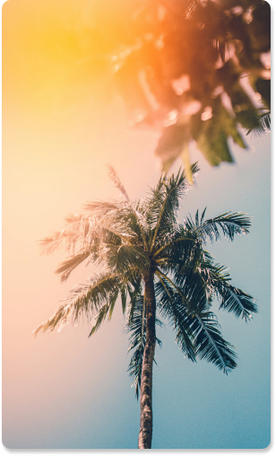

- 
O verão é a estação mais quente do ano, caracterizada por dias longos e noites curtas. No Hemisfério Sul, o verão começa em 21 de dezembro e vai até 20 de março. Durante essa estação, as temperaturas são elevadas, favorecendo atividades ao ar livre, como ir à praia, praticar esportes e viajar. As chuvas podem ser frequentes em algumas regiões, mas geralmente são rápidas e intensas.
O outono, que começa em 21 de março e termina em 20 de junho no Hemisfério Sul, é marcado pela queda das folhas das árvores e uma diminuição gradual das temperaturas. É uma estação de transição entre o calor do verão e o frio do inverno. As paisagens se transformam com tons de laranja, amarelo e marrom, criando cenários pitorescos. O clima tende a ser mais ameno e estável..
O inverno, que vai de 21 de junho a 22 de setembro no Hemisfério Sul, é a estação mais fria do ano. As temperaturas caem significativamente, especialmente nas regiões de maior altitude. As noites são mais longas e os dias mais curtos. Em algumas áreas, pode ocorrer geada e até neve. É uma época propícia para atividades como esportes de inverno e apreciar bebidas quentes.
A primavera, que começa em 23 de setembro e termina em 20 de dezembro no Hemisfério Sul, é a estação do renascimento e do florescimento. As temperaturas começam a subir, e a natureza desperta com flores coloridas e novos brotos nas árvores. É uma estação marcada pela renovação e crescimento, trazendo uma sensação de frescor e vitalidade. As chuvas são mais frequentes, contribuindo para o verde exuberante das paisagens.